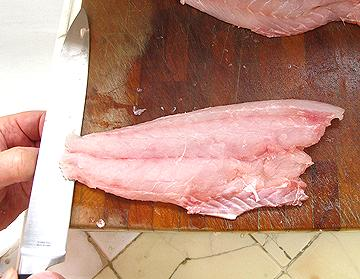
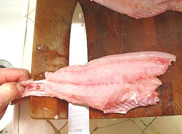
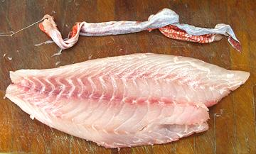

SAFARI
Users
To successfully skin fish, you will need just a few simple tools:
Cutting Board:
A flat one, and the thicker the better. You need good access to the left edge (or right edge if you're left handed) and unobstructed access across the front.Slicing Knife:
This should be the "old fashioned" type with a blade at least 8 inches long. The blunt end slicing knives now recommended for slicing roasts are too flimsy to provide proper control when skinning fish.
With a few fish you can practically just pull the skin off, but for most the skin is too delicate, adheres too well, or both, so it has to be stripped off using a knife. The example here is a Cardinal Snapper.
 Start skin side down with the fillet lined up along the edge of the board so the knife has flat access for the full length. Have the tail end just a little over the edge of your cutting board so you can bend it down and get a straight start with the knife blade. Work the edge so it's between the flesh and the skin.
Note: For very wide fish you should cut the skirt (belly) area
from the fillet and skin it separately. It is likely to not skin well
attached to the fillet. For a very large fish you may need to split the
fillet down the centerline seam.
 Once you've got the cut started get a good grip on the tail end of the skin. Hold the knife at a shallow angle. This angle will vary with the fish, steeper for fish with tough skins and almost no angle for fish with delicate skins. The objective is to not cut into the skin but to leave almost no flesh on it.
Move the knife forward carefully holding the angle steady - run right off the big end of the fish. You can use just a little sawing motion but not much. If you've got it just right you'll hear a sort of sizzling sound and feel it in the knife. This is the skin pulling cleanly from the fillet.
If the skin breaks, which can happen for fish with a delicate skin,
turn the fillet around and start again from the top front point working
toward the tail and a bit downward toward the belly. This will usually
get it all.
 You should now have a skin with practically no flesh and a nice clean fillet with no skin. If your fillet has some patches of the silver inner lining of the skin on it, don't worry about it. If you've broken through the skin and have patches of whole skin on the fillet, they're not easy to remove (use the point of your filleting knife). In most cases a few patches will do no harm.
For some fish it's fine to toss the skins into the pot with the head,
bones and fins for making fish stock for soups, chowders and stews. In
fact, in Southeast Asia Snakehead skins
are sold separately for use in making soup stock. For fish with a strong
tasting skin its best to just discard the skin.